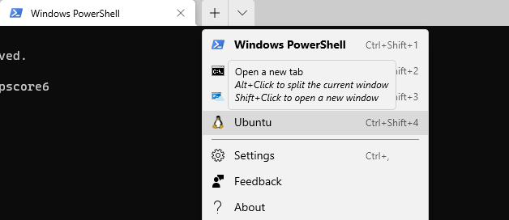

Quick launch of Linux terminal

Quick access to the home directory of Linux
Paste this file address to explorer. Here the ubuntu is your Linux distribution’s Name:
|
Quick access current directory with explore.exe:
|
Copy the content of a file in WSL to Windows System
|
Open VSCode
Launch VSCode and open current directory as a open project.
|
Launch VSCode and open file with name of demo.js.
|
Shutdown or restart a distribution
Sometimes, Linux will hang on for some weird reasons. We can try to shutdown it to make it normal.
|
Restart the whole WSL Service
Open powershell with Admin privileges and type the below command to restart the lxxsManger:
|
Set the Teminal starting directory
We need to do some modifications for settings.json for WSL. Ctrl-, to open setting panel , choose the terminal profile and then select the starting directory.

Use the awesome programmer friendly font
|
Join my Email List for more insights, It's Free!😋